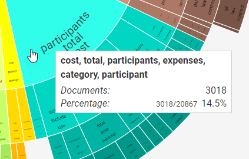
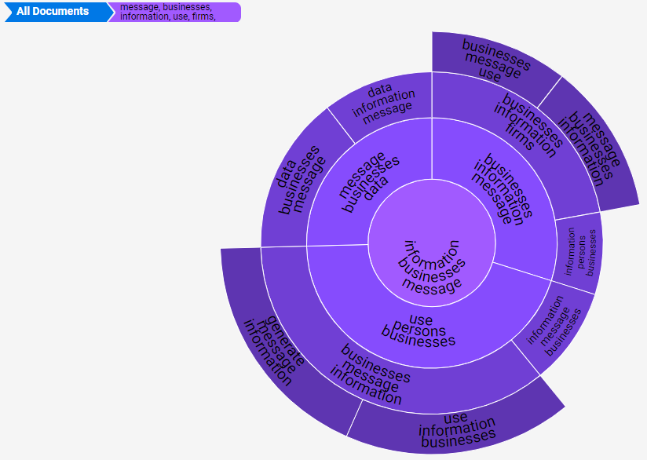
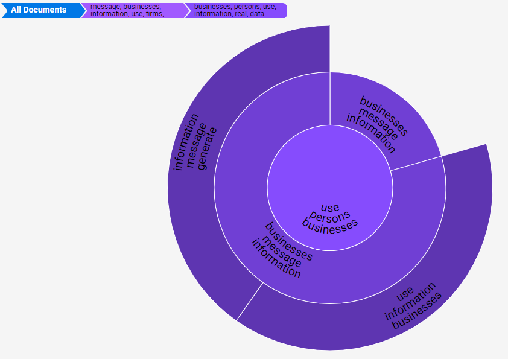

The concept wheel is a visual representation of cluster details, based on the clusters configured by your administrator. It corresponds to the details listed for a selected top-level cluster, shown as follows:
|
|
Note:
|
For more information, see
To use the Concept Wheel:
On the Concept Wheel, click a cluster group, a cluster, or a subordinate cluster.
If the cluster group is selected, the wheel will align around the group. If a cluster or subordinate cluster was selected, the wheel will align to that cluster segment or subordinate cluster segment.
Take any of the following actions:
Point to any wheel segment to view details in a tool tip as shown in the following .

Click a segment to enlarge it and realign the wheel to that area. Note that the more granular the concept becomes, the darker is the hue.


|
|
Tip: The bar above the wheel shows concept granularity and can be used to return the wheel to a less granular state. By clicking All Documents, you can return the wheel to the default position.
|
Other ways to return the wheel to the default position:
Double-click outside the wheel.
Related pages: